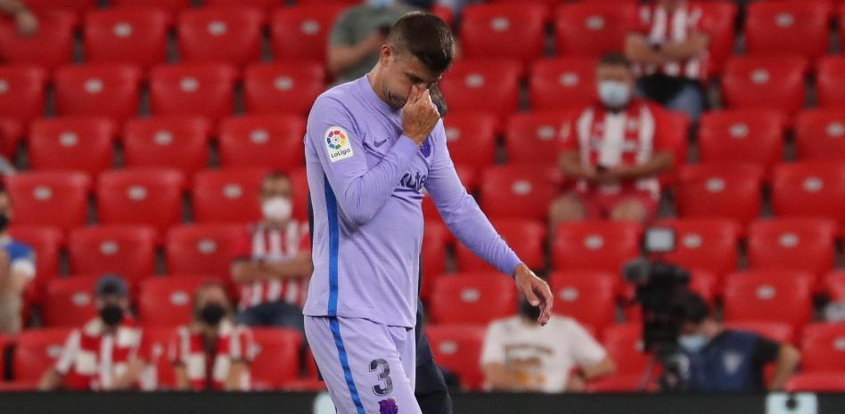

Un año ha tardado Luis Suárez en encontrarse a su nueva afición. Cosas de la pandemia. Hasta el momento el delantero uruguayo siempre había jugado en un Wanda Metropolitano vacío. Sin público y no había podido notar de primera mano el cariño de la afición. Sin embargo la hinchada colchonera tenía muchas ganas de darle la bienvenida como se merecía. Se notó cuando anunciaron por megafonía las alineaciones. El speaker dejó para el final al charrúa y la ovación fue impresionante. Únicamente comparable a la de Diego Pablo Simeone.
Gerard Piqué tuvo que ser sustituido a la media hora del partido contra el Athletic tras resentirse de unas molestias musculares y las pruebas médicas a las que fue sometido este domingo en la Ciutat Esportiva Joan Gamper confirmaron que el central tiene una elongación en el sóleo de la pierna izquierda que le impedirá jugar contra el Getafe.
El Girona y Las Palmas empataron a cero en un duelo igualado y competido sin eficacia por parte de los dos equipos a la hora de generar juego ofensivo. La lucha por la posesión dejó a los jugadores sin ideas ante unas zagas defensivas muy bien asentadas en el terreno.
En el primer tiempo el dominio fue alterno ya que los dos equipos lucharon por hacerse con la posesión del balón. En ambos casos, la circulación fue estéril sin encontrar los dos conjuntos la manera de ser profundos y hacer daño a las defensas rivales. Peñaranda tuvo una aproximación de peligro, pero su centro acabó a las manos Juan Carlos (15'). Las Palmas intentó conectar con el venezolano, solo como referencia en el ataque, con un Moleiro muy participativo en la media punta generando juego y espacios a sus compañeros. En el Girona, la precipitación, los errores y la falta de ideas de sus jugadores ofensivos encalló al equipo.
El primer campeón liguero fue el FC Barcelona de Platko y Samitier pero el gran dominador en esos años fue el Athletic Club que se adjudicó el torneo de 1930, conquistó el de 1931 y 1934 y el de 1936 ya en vísperas de la Guerra Civil. El equipo vizcaíno se llevó cuatro títulos ligueros en total, cuatro del Copa y fue subcampeón en 1932 y 33.
El equipo vasco dejó para la historia nombres que ya son leyenda. Su portero Blasco o la primera delantera que los aficionados recordaban de carrerilla: Lafuente, Iraragorri, Bata, Chirri y Gorostiza.
El Real Madrid, por su lado, fue campeón en dos ocasiones (1932 y 1933) y terminó como subcampeón en cuatro (1929, 1934, 1935 y 1936). Fue el primer gran equipo blanco de la historia con figuras de la talla de Zamora, Ciriaco, Quincoces o Luis Regueiro.
Además, el Real Betis Balompié se proclamó campeón en 1935.
En esos años de inicio del Campeonado liguero se produjeron algunas curiosidades:
Tuvo lugar, por ejemplo, la mayor goleada en la historia de la Liga.
Un 8 de febrero de 1931 el Athletic Club derrotaba 12-1 al FC Barcelona con Bata como gran protagonista: fue autor de siete goles. Un cronista de la época dejó escrito que "los dos supieron ganar y supieron perder. Esta es la mejor y más eficaz consecuencia del match del domingo en San Mamés. Porque ni los vencedores hicieron alarde de su sobrada victoria para humillar a los contrarios, ni los vencidos apelaron a trata alguna que pudiera empañar el resultado. Fue el match un alarde de nobleza deportiva. ¿Qué nos pueden importar los goals ante ello?”
Además, ese mismo año el Athletic se proclamó campeón en una Liga apasionante que finalizó con un triple empate.
Gracias al golaverage, el equipo dirigido por Mister Pentland se alzó con el campeonato de liga en 1931. Tras haberse registrado al final de la temporada un triple empate a 22 puntos entre el club vasco, la Real Sociedad y Racing.